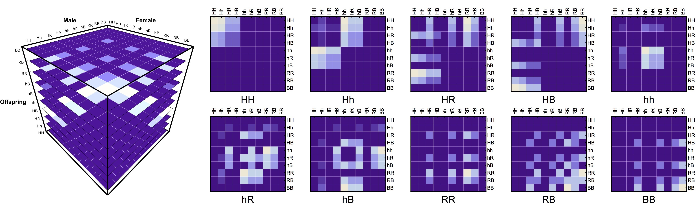
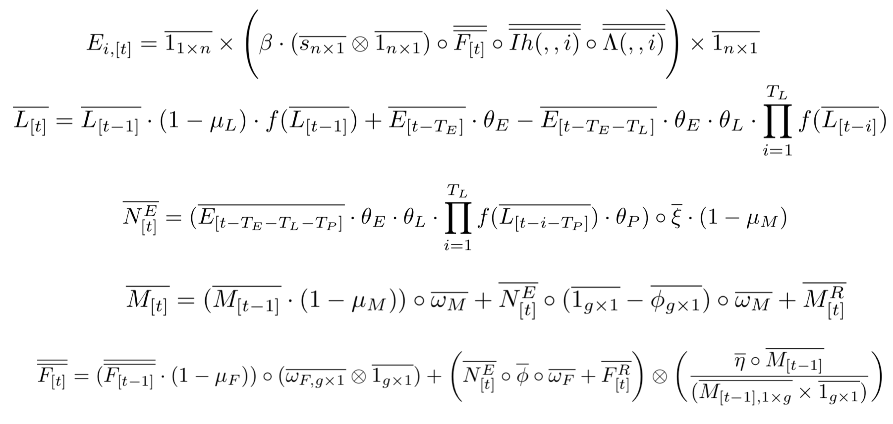

<script type="text/x-mathjax-config">
MathJax.Hub.Config({
  tex2jax: {inlineMath: [['$','$'], ['\\(','\\)']]}
});
</script>
<script type="text/javascript" async src="https://cdnjs.cloudflare.com/ajax/libs/mathjax/2.7.1/MathJax.js?config=TeX-MML-AM_CHTML"></script>


<section>
  <h1 style="font-size:45px"><b>M</b>osquito <b>G</b>ene <b>Driv</b>e <b>E</b>xplorer</h1>

    <hr><h1>Brief Description</h1>
    <p>
      <b>MGDrivE</b> is a framework designed to serve as a testbed in which gene-drive releases for mosquito-borne diseases control can be tested. It is being developed to accommodate
      various mosquito-specific gene drive systems within a population dynamics model that allows migration of individuals between nodes in a spatial landscape.
    </p>

  <br><br>

  <hr><h1>Demonstration</h1>
  <p>
    In this demo, we are releasing a total of 100 mosquitoes homozygous for the CRISPR/CAS9 and one with a mutation that makes the mosquito resistant to the construct. Each node in the network represents a mosquito population laid down in a spatial scenario (this could be though of as a household, house block or even city if needed). We simulate how the genetic construct would propagate across the nodes of the network if mosquitoes were slowly migrating between populations with a probability based on proximity. To watch more videos take look at our <a href="https://www.youtube.com/watch?v=sZXuUtToszw&list=PLRzY6w7pvIWqFJi94ZfhPkSVnazlUylpN">youtube playlist</a>.
  </p>


<div style="width:100%; margin-left:auto; margin-right:auto;">
  <video data-autoplay width=100% controls><source src="./images/CRISPR_R.mp4" type="video/mp4"></video>
</div>

    <hr><h1>How does it work?</h1>
      <p>
        The main idea behind this model is to consider the inheritance matrix of genotypes a three-dimensional structure
        in which each intersection point determines the ratio/probability of a specific offspring genotype (z axis) provided that a certain combination of
        male-female genotypes (x and y axis). This allows us to use <a href="https://marshalllab.github.io/MGDrivE/docs/reference/MGDrivE-Model.html">tensors</a> as the basis for our calculations which has many advantages, some of them being: computational speed,
        model's transparency and extendability.
      </p>
        <center></center>
      <p>
        The second novel idea in our framework is to consider the spatial layout as a network of inter-connected breeding habitats. By performing this abstraction we are able to
        transform these landscapes into distances matrices, and then into transition probabilities matrices (through the use of movement kernels).
        This allows our framework to be able to model arbitrary topologies in which we can simulate mosquito populations mating and migrating in realistic geographical settings.
      </p>
        <center></center>
      <br>
      <br>


  <hr><h1>Installation</h1>

Our package is now available on the <a href="https://cran.r-project.org/web/packages/MGDrivE/index.html">CRAN repository</a> so it can be easily installed and imported with the following commands:<br>

<br>
<pre>
  <code>
install.packages("MGDrivE")
library(MGDrivE)
  </code>
</pre>

<!--
 <center>
   
 </center>
-->

  <hr><h1><a href="https://pypi.org/project/MoNeT-MGDrivE/">MoNeT_MGDrivE</a></h1>

To facilitate the data analysis of the results produced by <a href="https://github.com/MarshallLab/MGDrivE">MGDrivE</a>, we provide a python package <a href="https://pypi.org/project/MoNeT-MGDrivE/">MoNeT_MGDrivE</a> installable through pip:

<br><br>
<pre>
  <code>
    pip install MoNeT-MGDrivE
  </code>
</pre>
<br>

This package provides all the functions we have used to perform the analyses on spatio-temporal gene-drives spread, and is part of our companion project: <a href="https://chipdelmal.github.io/MoNeT/">MoNeT</a>, so have a look at the project's <a href="https://chipdelmal.github.io/MoNeT/">website</a> for information on some of the work we are doing!


<br>

  <hr>
  <h1>Publications and Presentations</h1>
  <ul style="font-size:8px">
    <li>[Pre-print]: <a href="https://www.biorxiv.org/content/10.1101/607267v1">Héctor M. Sánchez C., Jared B. Bennett, Sean L. Wu, Gordana Rašić, Omar S. Akbari, John M. Marshall (2019). Confinement and reversibility of threshold-dependent gene drive systems in spatially-explicitAedes aegyptipopulations.</a></li>
    <li>[Pre-print]: <a href="https://www.biorxiv.org/content/early/2018/06/19/350488">Hector M. Sanchez C., Sean L. Wu, Jared Bennett, and John M. Marshall (2018). MGDrivE: A modular simulation framework for the spread of gene drives through spatially-explicit mosquito populations.</a></li>
    <li>[Paper]: <a href="https://www.nature.com/articles/s41467-018-07964-7">Nikolay Kandul, Junru Liu, Héctor M. Sánchez C., Sean L. Wu, John M. Marshall and Omar S. Akbari (2018). Nature Communications. Transforming Insect Population Control with Precision Guided Sterile Males.</a></li>
    <li>[Paper]: <a href="https://www.ncbi.nlm.nih.gov/pubmed/29844184">Karaminejadranjbar, Mohammad, Kolja N Eckermann, Hassan M M Ahmed, and Héctor M Sánchez C, Stefan Dippel, John M. Marshall, and Ernst A. Wimmer (2018). Consequences of Resistance Evolution in a Cas9-Based Sex-Conversion-Suppression Gene Drive for Insect Pest Management. Proceedings of the National Academy of Sciences of the United States of America, (2018). https://doi.org/10.1073/pnas.1713825115.</a></li>
    <li>[Paper]: <a href="https://www.nature.com/articles/s41598-017-02744-7">John M. Marshall, Anna Buchman, Héctor M. Sánchez C., Omar S. Akbari. Overcoming evolved resistance to population-suppressing homing-based gene drives. Nature Scientific Reports, (June 2017), 1–46. https://doi.org/https://doi.org/10.1101/088427</a></li>
    <li>[Paper]: <a href="https://www.nature.com/articles/s41467-018-07964-7">Nikolay Kandul, Junru Liu, Héctor M. Sánchez C., Sean L. Wu, John M. Marshall and Omar S. Akbari (2018). Nature Communications. Transforming Insect Population Control with Precision Guided Sterile Males.</a></li>
    <li>[Thesis]: <a href="https://www.researchgate.net/publication/333204465_Quantifying_the_Relationship_Between_Spatial_Habitat_Distribution_and_Homing_Allele_Fixation_in_MCR_Gene_Drive_Systems_for_Aedes_aegypti_Mosquitoes">Biyonka Liang, Héctor M. Sánchez C., Sean L. Wu, John M. Marshall, Christopher Pacioreck (2019). Quantifying the Relationship Between Spatial Habitat Distribution and Homing Allele Fixation in MCR Gene Drive Systems for Aedes aegypti Mosquitoes (May 2019).</a></li>
    <li>[Talk]: <a href="https://chipdelmal.github.io/MGDrivE_Presentations/MASH_MAP/#/">Héctor M. Sánchez C., John M. Marshall, David L. Smith (2019). Space, The Final Frontier: Mosquito Movement and Vector Control (MoNeT + MGDrivE). MASH-MAP Malaria Retreat (February 2019).</a></li>
    <li>[Talk]: <a href="https://chipdelmal.github.io/MGDrivE_Presentations/CompBio2018/">Héctor M. Sánchez C., Jared B. Bennett, Valeri Vasquez,  Sean L. Wu, Tomás León, Sarafina Smith, Gillian Chu, John M. Marshall (2018). MGDrivE: The Original Trilogy. Computational Biology Retreat (November 2018).</a></li>
    <li>[Talk]: <a href="https://chipdelmal.github.io/MGDrivE_Presentations/IDD2018/#/">Héctor M. Sánchez C., Jared B. Bennett, Sean L. Wu, Valeri Vasquez, John M. Marshall (2018). MGDrivE: A simulation framework for gene drive releases in spatially explicit mosquito populations, and its application to mosquito borne diseases control. Infectious Diseases Dynamics Conference (September 2018).</a></li>
    <li>[Talk]: <a href="https://www.odrive.com/s/73d81672-210d-4751-9c75-bc2311cc0e66-5ba16db0">Héctor M. Sánchez C., Sean L. Wu, Jared B. Bennett, John M. Marshall (2018). MGDrivE: A simulation framework for gene drive in spatially explicit mosquito populations and its application to threshold-dependent systems. Annual Meeting of the Society for Mathematical Biology & the Japanese Society for Mathematical Biology (July 2018).</a></li>
    <li>[Talk]: <a href="https://chipdelmal.github.io/MGDrivE/Documents/NCCB_MGDrivE/#/">Héctor M. Sánchez C., Sean L. Wu, Jared Bennett, John M. Marshall, (2017). MGDrivE: A Mosquito Population Framework to Evaluate and Optimize Gene-Drive Releases for Vector-Borne Diseases Control. NorCal CompBio Symposium, (October 2017).</a></li>
    <li>[Lightning Talk]: <a href="https://chipdelmal.github.io/MGDrivE_Presentations/NCCB2018/">Héctor M. Sánchez C., Jared B. Bennett, Sean L. Wu, Valeri Vasquez, John M. Marshall (2018). MGDrivE: Its application to releases optimization, and confinement in an Australian setting. NorCalCompBio Symposium (October 2018).</a></li>
    <li>[Poster]: <a href="https://www.researchgate.net/publication/328415445_MGDrivE_A_simulation_framework_for_gene_drive_in_spatially-explicit_mosquito_populations_and_its_application_to_threshold-dependent_systems?_sg=GO5AZdupgELnYfWqwbt49pQvGDHtlUICi6EI83S62pxd_kl7ShC1gfXCUFWws8sdP2FcwUv6VgRVVt62oj0eqPxeMtjSNBlFWnb0D0jj.db4-0ytUsNWGA83sIqjehjNkubGptgNQK9pvKmXZdkUH5V2_DbuV6VrKvRS3-muwFTRIM55DIGo1bHiwUYPvSA">Héctor M. Sánchez C., Jared B. Bennett, Sean L. Wu, Valeri Vasquez, John M. Marshall (2018). MGDrivE: A simulation framework for gene drive in spatially-explicit mosquito populations and its application to threshold-dependent systems. American Society of Tropical Medicine and Hygiene (October 2018).</a></li>
    <li>[Poster]: <a href="https://www.researchgate.net/publication/321085822_A_Tale_of_Two_Cities_Confinability_and_Remediation_Potential_of_UDmel_and_Translocation_Gene-Drives_in_Spatially_Explicit_Aedes_aegypti_Populations?_sg=4QVpTD0SIzZeiyyC2RyeY8LSiZnpH30ZTAlPGDsIjaWDUdlT3eUBDyR_hDlZovHdo2VPa_25vZ4NV281Ln8UZJPIPje5eQX_JhNyOwdy.u6epxUrc8vXzaAH5EphLjQxpCp9UNUmJuh3UvDlZTZ9UjzeS98LZY2ieOnliKdq0T_9tcrQuBteQNvyzhbFaDw">Héctor M. Sánchez C., Sean L. Wu, Jared Bennett, John M. Marshall, (2017). A Tale of Two Cities: Confinability and Remediation Potential of UDMel and Translocation Gene-Drives in Spatially Explicit Aedes aegypti Populations. University of California, Berkeley Compitational Biology Retreat (November 2017).</a></li>
  </ul>
  <br>
  <hr><br>
   &nbsp
   &nbsp
   &nbsp
   &nbsp
   &nbsp
   &nbsp
   &nbsp
   &nbsp
   &nbsp
   &nbsp
   &nbsp
  <br><br><br>

</section>
